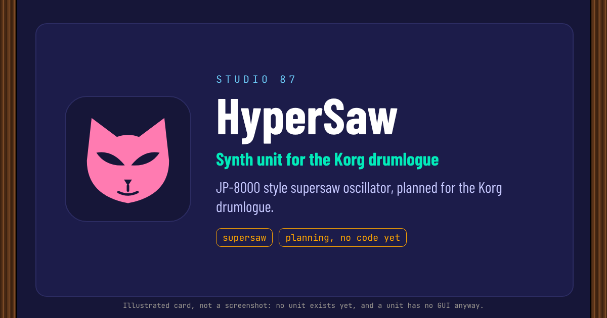

HyperSaw for drumlogue
Korg drumlogue synth unit, planned · Studio 87
A JP-8000 style supersaw oscillator for the Korg drumlogue.

Illustrated card, not a screenshot: no unit exists yet, and a unit has no GUI anyway.
Status: planning, no code yet
This repo has no source, no unit file and nothing to install. There is nothing to test on a drumlogue yet.
What exists today
- README, ROADMAP.md, LICENSE (MIT), icon and the illustrated card above.
What does not exist yet
- Source code, build files and a unit file (.drmlgunit).
- A parameter layout for the drumlogue.
- An install guide: it will be written from the unit source once there is a unit.
Roadmap
Copied from ROADMAP.md in the repo.
- Port the HyperSawX DSP from the minilogue xd unit
- Build with the Korg logue SDK
- Parameter layout for the drumlogue
MIT. Files from the Korg logue SDK keep their own BSD-3-Clause license. Not affiliated with or endorsed by any hardware maker named here. All trademarks belong to their owners.